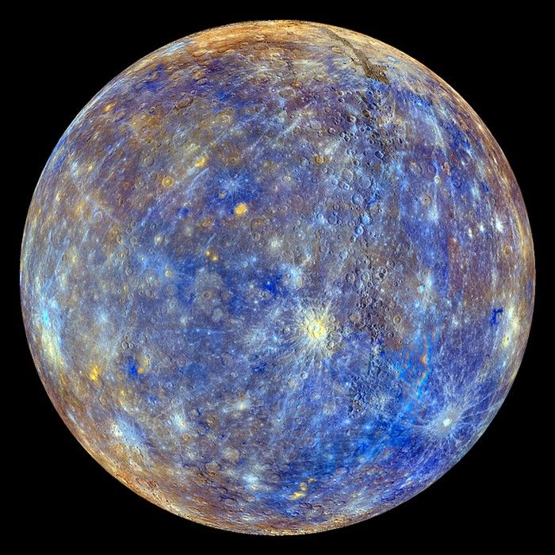
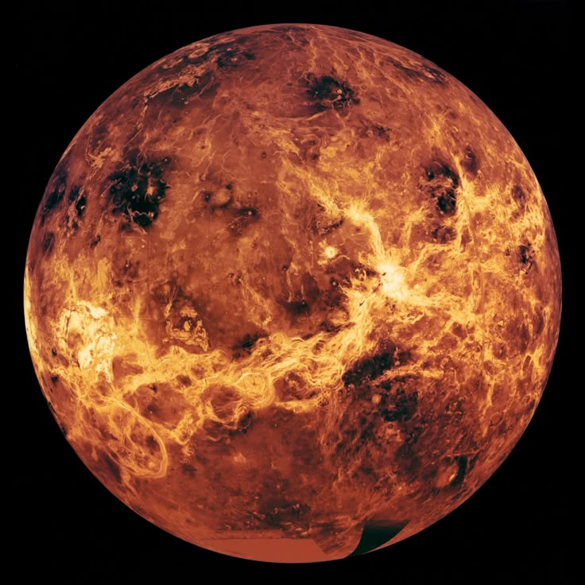
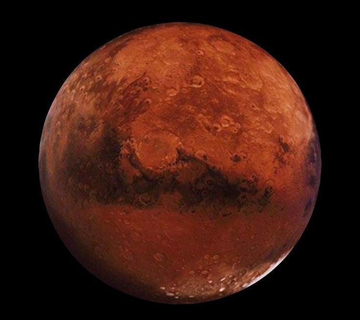
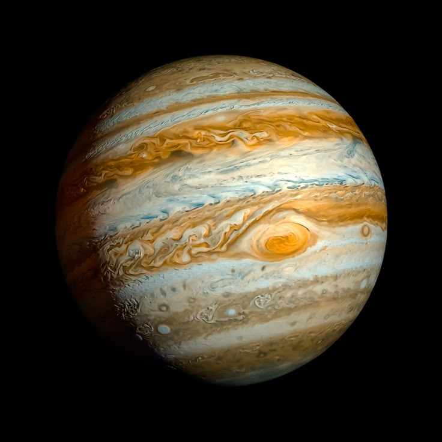
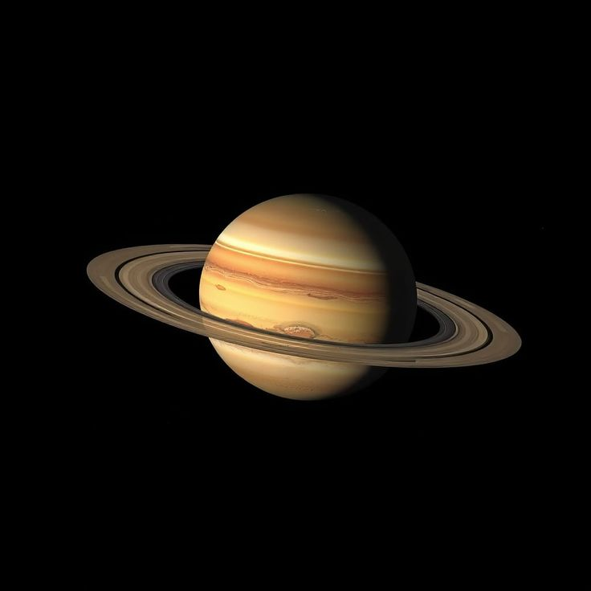
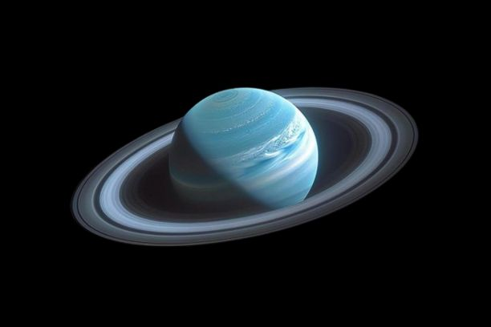
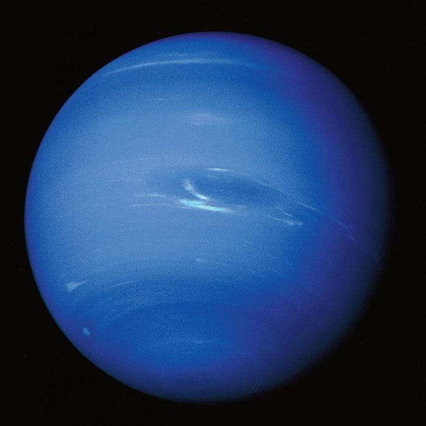

Statistics
- Distance from Sun: Approximately 0.983 AU ( 149 million km )
- Diameter: 12,756.27 km ( 7,926.38 miles )
- Temperature during daytime : 57°F (14°C) with summer highs reaching up to 90°F (32°C)
- Temperature during nighttime : 54°F (12°C) with some regions experiencing as low as 1.4°F (-17°C)
- Atmosphere: Composed of 78% nitrogen, 21% oxygen, 0.93% argon (Co2), and 0.04% other gases
- Moons: 1
Overview
Although Earth is only the 5th largest planet in the solar system, its the only one known to have liquid water on its surface. Slightly larger than Venus, it is the biggest of the four inner planets, all of which are composed mainly of rock and metal. Unlike the other planets, Earth's English name does not come from Greek/Roman mythology. Instead, it originates from Old English and Germanic languages, simply meaning “the ground.” Across the world, however, our planet is known by many different names in the thousands of languages spoken by its inhabitants.
When the solar system settled into its current layout about 4.5 billion years ago, Earth formed when gravity pulled swirling gas and dust in to become the third planet from the Sun. Like its fellow terrestrial planets, Earth has a central core, a rocky mantle, and a solid crust.
Facts
With an equatorial diameter of about 7,926 miles (12,756 kilometers), Earth is the largest of the terrestrial planets and the fifth largest in the solar system. Located roughly 93 million miles (150 million kilometers) from the Sun, Earth sits at a distance defined as one astronomical unit (AU). This measurement is used to easily compare how far planets are from the Sun. Sunlight takes about eight minutes to travel this distance and reach Earth. Earth's moderate temperatures and chemical composition create ideal conditions for life.
In particular, the planet is unique for its abundance of liquid water, covering most of its surface. These vast oceans provided the perfect environment for life to emerge around 3.8 billion years ago.
Earth's global ocean, which covers about 71% of the planet's surface, has an average depth of about 2.3 miles (3.6 kilometers) and contains 97% of Earth's water. Almost all of Earth's volcanoes are hidden under these oceans. Hawaii's Mauna Kea volcano is taller from base to summit than Mount Everest, but most of it is underwater. Earth's longest mountain range is also underwater, at the bottom of the Arctic and Atlantic oceans. It is four times longer than the Andes, Rockies and Himalayas combined.
Learn More
Watch a video
Continue exploring the Solar System!
Where will your next adventure take place?

Mercury
Closest planet to the Sun with a heavily cratered surface and extreme temperatures.

Venus
A hot, toxic world with a thick atmosphere and volcanic surface.

Mars
A cold, rocky planet known as the Red Planet with deserts and ice caps.

Jupiter
The largest planet, a gas giant with powerful storms and many moons.

Saturn
A gas giant famous for its beautiful ring system

Uranus
An ice giant that rotates on its side with a blue-green atmosphere.

Neptune
A distant ice giant with strong winds and a deep blue color.